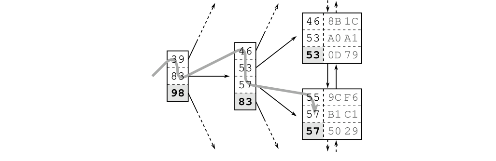

nút nhánh có các giá trị 46, 53, 57 và 83. Theo sơ đồ này, một lớp nhánh được xây dựng lên cho đến khi tất cả các nút lá được bao phủ bởi một nút nhánh. Lớp tiếp theo được xây dựng tương tự, nhưng trên đỉnh của cấp độ nút nhánh đầu tiên. Quy trình lặp lại cho đến khi tất cả các khóa vừa vặn vào một nút duy nhất, nút gốc.
Cấu trúc là một cây tìm kiếm cân bằng vì độ sâu của cây là bằng nhau ở mọi vị trí; khoảng cách giữa nút gốc và các nút lá là như nhau ở mọi nơi.
Ngay khi được tạo ra, cơ sở dữ liệu tự động duy trì chỉ mục. Nó áp dụng mọi insert, delete và update vào chỉ mục và giữ cho cây ở trạng thái cân bằng, do đó gây ra chi phí bảo trì cho các thao tác ghi. Chương 8, “Chỉnh sửa Dữ liệu”, giải thích điều này chi tiết hơn.

Di chuyển trong B-Tree
Hình 1.3 cho thấy một đoạn chỉ mục để minh họa cho việc tìm kiếm khóa “57”. Việc di chuyển trong cây bắt đầu từ nút gốc ở phía bên trái. Mỗi mục được xử lý theo thứ tự tăng dần cho đến khi một giá trị lớn hơn hoặc bằng (>=) thuật ngữ tìm kiếm (57). Trong hình, đó là mục 83. Cơ sở dữ liệu theo tham chiếu đến nút nhánh tương ứng và lặp lại quy trình cho đến khi việc di chuyển trong cây đạt đến một nút lá.
5